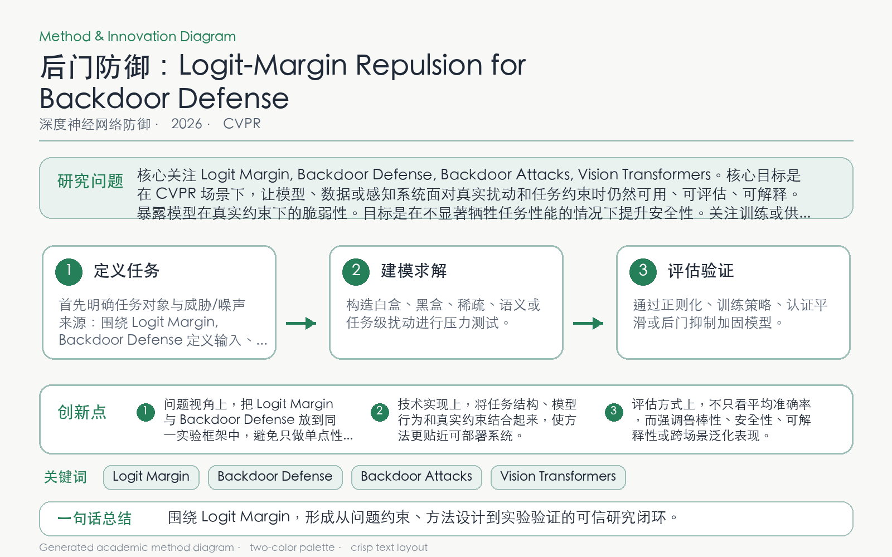

Problem
解决的问题
这篇论文属于“深度神经网络防御”方向，核心关注 Logit Margin, Backdoor Defense, Backdoor Attacks, Vision Transformers。它要解决的不是单纯提升一个指标，而是在 CVPR 场景下，让模型、数据或感知系统面对真实扰动和任务约束时仍然可用、可评估、可解释。暴露模型在真实约束下的脆弱性。目标是在不显著牺牲任务性能的情况下提升安全性。关注训练或供应链中隐藏触发器导致的定向失败。
Defense on DNNs · 2026 · CVPR
Logit-Margin Repulsion for Backdoor Defense
Problem
这篇论文属于“深度神经网络防御”方向，核心关注 Logit Margin, Backdoor Defense, Backdoor Attacks, Vision Transformers。它要解决的不是单纯提升一个指标，而是在 CVPR 场景下，让模型、数据或感知系统面对真实扰动和任务约束时仍然可用、可评估、可解释。暴露模型在真实约束下的脆弱性。目标是在不显著牺牲任务性能的情况下提升安全性。关注训练或供应链中隐藏触发器导致的定向失败。
Value
用于展示时，这篇论文可以放在“问题定义 - 方法设计 - 证据评估”的链条中理解。它的价值在于把 Logit Margin 具体化为一个可实验验证的研究问题，并通过 IEEE/CVF Conference on Computer Vision and Pattern Recognition (CVPR)（CCF A, CORE A*） 的发表形态呈现该方向的代表性进展。
Generated Method Diagram
该图基于论文标题、主题关键词与中文解读内容重新绘制，用统一的学术信息图风格概括研究问题、技术路线和创新点。相比原始 PDF 页面截图，它更适合网页展示和汇报讲解。
打开原文 PDF
Technical Route
Innovation